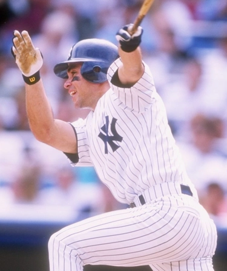

Rey Sánchez
Career Highlights & Facts
(Facts are AI-generated and may require verification)
- Earned recognition as the top-ranked defensive player at the shortstop position in the American League for 3 consecutive seasons.
- Executed a rare walk-off inside-the-park home run in the 10th inning of a game.
- Served as a defensive replacement and middle infielder who maintained a career .983 fielding percentage.
Would you like to find out more about Rey Sánchez?
Puerto Rico and Baseball
Bill Nowlin
Middle infielder Rey Sánchez spent 15 years in the major leagues and worked just 10 games shy of 1,500. About two-thirds of the games were at shortstop and one-third at second base. He hit .272 over the course of a career spent with nine big-league ballclubs, though his first seven seasons were spent with the Chicago Cubs. He had a career .983 fielding percentage, and for three seasons (1989-91, while he was with the Kansas City Royals) was ranked tops in the American League in defensive WAR (Wins Against Replacement players).
He was born in Rio Piedras, Puerto Rico, as Rey Francisco Sánchez Guadalupe on October 5, 1967. His mother, Emma Guadalupe, was a housewife. His father, Francisco Sánchez, was a computer programmer, and worked with Goodyear.
When he was 17 his parents sent him to California, where he stayed for 1½ years with a family who were participating in a student-exchange program. He graduated from Live Oak High School in Morgan Hill, California. At age 18, he was selected by the Texas Rangers in the 13th round of the June 1986 amateur draft. Sánchez was 5-feet-10 and listed at 180 pounds.
Sánchez signed with the Rangers on June 22 and played rookie ball that year in the Gulf Coast League, getting into 52 games and batting .290 with 23 RBIs. He was error-free at second base in 22 chances but committed 15 errors in 220 chances (.932) at shortstop.
In 1987 Sánchez split his time almost precisely evenly between the Butte Copper Kings (rookie-level Pioneer League) and the Single-A Gastonia Rangers in the South Atlantic League. He hit .365 with Butte, but found the elevation to Single A more difficult, batting .219.
Sánchez’s 1988 season was again in A ball, in the Florida State League, with the Port Charlotte Rangers, and this time he was ready for it. Now 20 years old, he hit for a .306 batting average, and improved his fielding. He was bumped up to the Triple-A Oklahoma City 89ers in 1989, and struggled to hit pitching at the higher level (.224) but his fielding percentage increased to .958.
On January 3, 1990, the Rangers traded Sánchez to the Chicago Cubs for another minor leaguer, infielder Bryan House. Unfortunately for Sánchez, he missed the entire 1990 season due to injury. The deal paid off for the Cubs, though. In 1991 Sánchez had a very good season with the Iowa Cubs (in the Triple-A American Association), where he hit .290 and improved his fielding percentage to.971. Sánchez was called up to the big-league team in September 1991.
He debuted on September 8, playing shortstop in the eighth and ninth innings in a game against the visiting San Francisco Giants. No balls came his way, and with him due to lead off in the bottom of the ninth — the Giants were leading, 4-3 — manager
Jim Essian
removed him for a pinch-hitter. The Cubs didn’t score. Sánchez started back-to-back games on September 13 and 14, and was 0-for-4 at the plate, removed for a pinch-hitter in late innings both times. He got his first big-league base hit on September 17 in Pittsburgh. He’d entered the game, replacing Ryne Sandberg, in the sixth (the Cubs were losing 7-0). He singled past the shortstop in the top of the eighth, driving in a run. The Pirates won the game, 9-2. Sánchez appeared in 13 September and October games, and was 6-for-23 with four walks. He had one other RBI. He was error-free in 36 chances in the field.
Sánchez spent most of his time in 1992 with the big leaguers. Working as a late-inning defensive replacement for a few games in April, he had the opportunity to start a couple of games in early May when
Shawon Dunston
was put on the 15-day DL. In his first game starting, he hit a 10th-inning bases-loaded sacrifice fly to win the game against the visiting Braves, offering what one writer dubbed a “Rey of hope” for a Cubs team that was not doing well.
“That was a dream came true,” said Sánchez after the game.
Dunston’s condition was more serious than at first thought, and he had to undergo back surgery that kept him out most of the season. Sánchez himself got the chicken pox and went on the 15-day DL. From June 5 through September 4, he played in 68 games, batting .264 and driving in 18 runs. Three of them came in a 5-2 win over the Phillies on June 21. Another came on a suicide squeeze on June 30, giving the Cubs an insurance run in a 3-1 victory. On July 8 Sánchez was hit by a pitch in the bottom of the 10th inning, forcing in the winning run in a 3-2 win over Cincinnati. A bulging disc in his lower back cost him the rest of the season after September 4.
For the next three seasons — 1993 through 1995 — Sánchez was with the Cubs, averaging 105 games a year. Most of 1993 was at shortstop and almost all of 1995 was at second base. The transition had come in 1994, when second baseman
Ryne Sandberg
abruptly retired in mid-June, giving Sánchez the opportunity to try to fill his shoes. Manager
Tom Trebelhorn
said at the time that Sánchez had “excellent range, excellent hands, excellent throwing arm.”
He averaged just over 26 RBIs a year. It was his defense that secured him the work; he committed a total of 31 errors over the three-year span, very good for a middle infielder. Weirdly, three of them came in one game, on April 27, 1993, against Colorado.
Gerry Fraley of the
Dallas Morning News
said of Sánchez’s unexpected filling in for Sandberg, “Rey Sánchez handled the pressure of replacing Ryne Sandberg at second base. Sánchez hit .285 and had only two errors in 50 games at second.”
During the winter of 1994-95, Sánchez played in Puerto Rico with the San Juan Senators, in the Winter Professional Baseball League. There, he was part of the Dream Team, champions of the Caribbean Series of 1995 (6-0). With an average over .400, he was the batting champion of the 1994-95 regular season in Puerto Rico. He batted ninth in the Dream Team lineup, a very impressive lineup:
Robby Alomar
Bernie Williams
Edgar Martínez
Juan González
Rubén Sierra
Carlos Delgado
Carlos Baerga
Carmelo Martínez
, and Rey Sánchez.
Former Cubs star
Ron Santo
said of Sánchez in April 1996, “He’s the best young infielder — fielding a groundball — I’ve ever seen in the big leagues. Quick feet, great arm, great range.”
Sánchez missed more than six weeks — almost all of June and most of July 1996 — because of a fractured left-hand hamate bone. He was having a subpar year at the bat prior to the injury (batting .211). By coincidence, the same .211 was his mark at year’s end, too. Ryne Sandberg had come out of retirement, after a year and a half out of baseball, and played in both 1996 and 1997. Though Sánchez had recovered some of his batting stroke and was hitting .249 by mid-August 1997, he was in the final year of his contract with the Cubs and was traded to the New York Yankees on August 16 for minor-league right-hander Frisco Parotte. It was a fractured ulna bone that prompted the deal; New York’s
Luis Sojo
had been hit by a pitch. Sánchez hit .312 in the 38 games he played for the Yankees.
A free agent at the end of the season, Sánchez talked with the Yankees but wanted to be reassured he’d be an everyday player. “It would have to be as a regular,” he said of any signing. “If it’s not here, then I will go somewhere else. I enjoyed being here and what I enjoyed the most was playing every day.”
His agent was Scott Boras. Not able to get sufficient reassurance, Sánchez signed instead with the San Francisco Giants in January 1998, the Giants needing to replace
Jose Vizcaino
, who had himself become a free agent.
Sánchez hit .285 with 30 RBIs, but the Giants declined to exercise their option to renew his contract for another year. He signed with the Kansas City Royals for 1999 and had what was perhaps his best season, driving in a career-high 56 runs while batting .294. A free agent again, he took a month considering offers and re-signed with the Royals for 2000, on a two-year deal. He drove in another 38 runs, with a .273 average. These two years (and the one following in 2001) were his best years defensively, based on WAR calculation. He was considered by some the “best fielding shortstop in the major leagues” (Associated Press), and Royals manager
Tony Muser
talked about how important he was. Offense was a bonus (he had a franchise-best 21-game hitting streak at the time Muser commented): “With him every day, he probably means two to three runs defensively a game for us. He may not drive them in, but he saves them.”
At the end of July, on the 31st, Sánchez was batting .303 and was traded to the Atlanta Braves for
Alejandro Machado
and
Brad Voyles
. The Braves had lost
Rafael Furcal
to a shoulder injury and needed a shortstop. By season’s end Sánchez had a .281 average. But when the schedule was complete, the season wasn’t over for Sánchez and the Braves. They went on to win the National League Division Series over Houston and then went up against the Arizona Diamondbacks in the NLCS. Arizona won the pennant in five games and went on to beat the Yankees in the 2001 World Series. Sánchez hit .294 in the NLCS, by far the best average of any of the position players. Second-best was
Chipper Jones
with .263. Sánchez committed an uncharacteristic two errors, both of which were followed by runs, in the Braves’ 11-4 loss in Game Four.
The Boston Red Sox signed Sánchez to a minor-league contract in February. After he hit.400 in spring training, the Red Sox signed him to the big-league team, to take over second base from
José Offerman
. A tight hamstring cost him more than a month after June 3, but he had a very good year overall, driving in 38 runs despite the lost time and batting .286.
Another year, another team — Sánchez signed a one-year deal with the New York Mets in the final days of 2002. As it worked out, returning to the National League gave him the opportunity to play major-league baseball in Puerto Rico, because this was the year the Montreal Expos played a number of “home games” at San Juan’s Estadio
Hiram Bithorn
. Sánchez was in the four games of the Mets’ visit, April 11-15. He was 1-for-8 at the plate. With Sánchez at shortstop and Roberto Alomar at second base, the Mets had a double-play combination of Puerto Ricans. The Hall of Fame reportedly said, “(T)here never had been a pair of Puerto Rican-born players who have started on Opening Day and then gone on to be the everyday players at second and short.”
It wasn’t the first time the two had played together. They had done so in Puerto Rican winter ball and had both been on the same championship team in 1995.
It was written that Sánchez had been signed in large part to bridge the gap until
José Reyes
was ready to take over; Sánchez said he was glad to mentor Reyes, and the younger prospect said Sánchez was very helpful.
Sánchez, on the other hand, wasn’t having a good season at the plate, and when he was traded on July 29 — to the Seattle Mariners (with some cash) for
Kenny Kelly
— he was batting only .207. Reyes had debuted in June.
It was good to get away from the Mets. There had been allegations — denied by all — that during the April 30 game Sánchez had gotten himself a haircut in the Mets clubhouse. The accusation dogged him, and after the trade he seemed to perhaps acknowledge the possibility, saying, “That was not the real me.”
With the change of team, Sánchez hit at a .294 pace for the Mariners. But he was on the move again after the season. In December he signed with the Tampa Bay Devil Rays. It was his ninth team.
Throughout his career, Sánchez had usually hit one or two game-winning hits a year, and more than once executed a suicide squeeze. On June 11, 2004, he had a 3-for-5 game, with his final hit being a walkoff 10th-inning inside-the-park home run, beating the Colorado Rockies. He drove in 26 runs in all, accompanying a .246 batting average. On June 30 he hit another home run, the 15th and final home run of his career.
Sánchez had one more major-league year in him, and he signed another one-year contract, for a second stint with the Yankees in 2005. His season ended on June 8, due to two bulging discs in his neck. He had appeared in just 23 games (batting .279).
When Sánchez retired in 2005, he worked for about two years as a coach with the Indios de Mayagüez (Mayagüez Indians) in the Puerto Rican Winter League. Since then, he has not been active in baseball.
Sanchez has a wife with one daughter, and two daughters from a prior marriage.
As of 2016 Sánchez lived in Las Vegas, Nevada, and finds his pension from baseball sufficient to provide for his needs.
This biography is included in
“Puerto Rico and Baseball: 60 Biographies”
(SABR, 2017), edited by Bill Nowlin and Edwin Fernández.
In addition to the sources noted in this biography, the author also accessed Sánchez’s player file from the National Baseball Hall of Fame, the
Encyclopedia of Minor League Baseball
, Retrosheet.org, Baseball-Reference.com, Rod Nelson of SABR’s Scouts Committee, and the SABR Minor Leagues Database, accessed online at Baseball-Reference.com. Thanks to Edwin Fernandez Cruz and to José Sánchez.
Thanks to Edwin Fernandez Cruz and José Sánchez, emails to the author on June 27 and September 9, 2016.
Ed Glennon, “Cubs Finally Solve Mystery of Atlanta,”
Register Star
(Rockford, Illinois), May 6, 1992: 31. Sánchez also tripled earlier in the game.
Joey Reaves, “Cubs Find Ray of Hope in Comeback Win,”
Chicago Tribune
, May 6, 1992: C3.
Rod Beaton, “Cubs Have a Rey of Hope for Sandberg’s Replacement,”
USA Today
, June 15, 1994.
Gerry Fraley, “National League Preview,”
Post and Courier
(Charleston, South Carolina), April 23, 1995: 35.
Jerome Holtzman, “Cubs’ Sánchez a Gem on Defense, But Offense Needs Some Polish,”
Chicago Tribune
, April 4, 1996: 4.
George King, “Sánchez to Yanks: It’s Every Day or the Highway,”
New York Post
, October 9, 1997.
Associated Press, “Royals Defeat Rangers,”
Register Star
(Rockford, Illinois), June 1, 2001: 23. His hitting streak lasted 21 games.
David Waldstein, “Mets: It’s Feat First for Sánchez, Alomar,”
Newark Star-Ledger
, March 4, 2003.
Ibid.
Rafael Hermoso, “Sánchez, a Willing Mentor, Is Holding a Place for Reyes,”
New York Times
, February 24, 2003.
Rafael Hermoso, “Mets Trade Sánchez to Mariners,”
New York Times
, July 30 2003: D3.
Full Name
Rey Francisco Sanchez Guadalupe
Born
October 5, 1967 at Rio Piedras, (P.R.)
Stats
Baseball Reference
Retrosheet
Puerto Rico
Puerto Rico and Baseball
Career Totals
| WAR | AB | H | HR | BA | R | RBI | SB | OBP | SLG | OPS | OPS+ |
|---|---|---|---|---|---|---|---|---|---|---|---|
| 20.6 | 4850 | 1317 | 15 | .272 | 549 | 389 | 55 | .308 | .334 | .642 | 69 |
Statistics via Baseball-Reference.com
The Original Clue